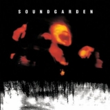
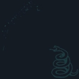
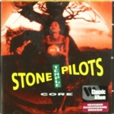
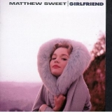

Top 100 Albums of 1990-1999 (Part One: Bubbling Under)
By No Ripcord Staff
 Archers Of Loaf
Archers Of Loaf  Silver Jews
Silver Jews  Tortoise
Tortoise  Jawbox
Jawbox  Yo La Tengo
Yo La Tengo  Stereolab
Stereolab  The Pharcyde
The Pharcyde  Cat Power
Cat Power  Raekwon
Raekwon  Built To Spill
Built To Spill
Rave, jungle, drum & bass, baggy, grebo, grunge, Britpop, turntablism, trance, trip-hop, chill-out and more. The 90s sure produced a lot of genres, not to mention the incredible records that took styles and influences that had gone before. Over the next two weeks, we're going to give our definitive view of the Top 100 Albums of 1990-1999. It's ten parts and over 25,000 words of magnificence - you're in for a treat.
But first, here are the albums that had a few votes from our writers, but just not quite enough to make it to the magical century. If records this good didn't make the list, just imagine what did.
[Bubbling Under] | [Writers' Picks] | [100-81] | [80-61] | [60-41] | [40-21] | [20-16] | [15-11] | [10-6] | [5-1]
Soundgarden
“Superunknown”
(A&M – 1994)
Superunknown was probably the last great album that could truly be called “grunge,” but like any great genre-album, it’s much more than that. It jumps from sludgy tracks like 4th Of July to straightforward rockers like My Wave to poppy ballads like Black Hole Sun effortlessly, largely because no matter how the track sounds musically, it’s anchored by an outstanding performance by Chris Cornell, whose pipes are at their strongest here. For that reason alone, it warrants its sprawling 70-minute length, and while there are a handful of more forgettable tracks—can anyone hum Fresh Tendrils or sing the chorus of Half?—the fact that the longest songs, such as Like Suicide or Limo Wreck, are also the most musically daring, and that the pacing and sequencing is so deliberate, makes it easy to forgive a bit of over-ambition. Forrest Cardamenis
Playlist: Like Suicide
Archers Of Loaf“Icky Mettle”
(Alias – 1993)
“No I do not think that you would like me anyway / Because you are superior in all aspects to me”, might seem more appropriate crooned by Morrissey over jangly melodies than belted out triumphantly over a torrent of slashing guitars. But it’s this combination – loud, brawny riffs and urgent melodies with Eric Bachmann’s witty, self-deprecating poetry – that has made the Chapel Hill band such a cult favourite among fans, plus their debut, Icky Mettle, a classic of 90s indie rock. Blaring, uncompromising tracks like Sick File and Backwash would have you mistake the band for post-hardcore on first listen, but it’s the sensitivity found in tracks like Web In Front, where the band proclaims, “All I ever wanted was to be your spine”, that reveals them as nothing but a bunch of big softies. Peter Quinton
Playlist: Wrong
Silver Jews“American Water”
(Drag City – 1998)
David Berman was a poet before an indie-rocker, and throughout his Silver Jews career he’s been quietly making his own case for music lyrics as proper art – deep, rich and very distinctive. Who other than Berman could have written the record’s infamous opening line – “In 1984 I was hospitalised for approaching perfection”? Every line on American Water has been quoted many a time among Silver Jews fans, and yet such is their sublime, almost psychedelic effect that it’s impossible to say if those are words are felt in the same way at all. In Berman’s hands a simple observation is upended, its pockets tipped out, and it is set back, never quite looking the same again. “Won’t soul music change, now that our souls have turned strange?” he wonders on We Are Real. And Berman turns them yet stranger. Stephen Wragg
Playlist: Random Rules
Tortoise“Millions Now Living Will Never Die”
(Thrill Jockey – 1996)
Tortoise had already carved out a niche in the post-rock face, but they leapt to the top of the cliff with this album. Millions Now Living... is made up on one 21 minute track, followed by five shorter more conventional ones (if such a word can be used with this band). That first track, Djed, is astonishing - a mercurial mosaic, constructed in segments, each blending into the next, taking in dub, electronica, hip-hop and rock. It's a tour de force that remains not only one of the post-rock movements defining statements, but one of the key tracks of the decade. Seventeen years on, with mainstream rock having retreated into conservatism once again, Millions Now Living... still sounds like the future. David Wood
Playlist: Djed
Metallica
“Metallica”
(Elektra / Vertigo / Universal – 1991)
On ...And Justice For All, Metallica took their penchant for long metal epics as far as they could, with Kirk Hammett saying that some tracks were too long for live performances. So for their first album of the 1990s, the band compressed those expansive journeys into straightforward blasts of metal. Enter Sandman became a musical phenomenon. Sad But True is a sludgy, down-tuned affair that slams forward with James Hetfield’s howls and Lars Ulrich’s slower but strong drum beats. Wherever I May Roam stands out for its use of sitar in the introduction but the rest of the song holds up just as well. Nothing Else Matters is one of the most low-key affairs the band has ever been involved with, but its delicacy is also is greatest strength. This album is the last one in the string of successes Metallica had and it still holds up today. Joe Marvilli
Playlist: Wherever I May Roam
Jawbox“For Your Own Special Sweetheart”
(Atlantic – 1994)
Jawbox conveniently pulled all the stops once they got major label backing to record For Your Own Special Sweetheart. Such a move must’ve angered a small portion of their fanbase for only a second, as …Sweetheart was everything they wanted and more – to this day, it still pummels with a deft blend of tight musicianship and melodic dissonance that put other major label grunge acts to shame. Instead of pouring their production with a gallon of murk, they concentrated on bringing forth the opulence of acerbic guitars and out of kilter hooks with a brutally honest veneer. They captured that essence so adroitly that it ultimately outshined the rest of their career; even so, they made it count with …Sweetheart, which still remains one of the most important touchstones of post-hardcore. Juan Edgardo Rodriguez
Playlist: Reel
Yo La Tengo“I Can Hear The Heart Beating As One”
(Matador – 1997)
Yo La Tengo’s unique brand of melodic noise deserves its status as college-rock darling. Less folksy and accessible than the earlier Electr-o-pura (and especially its masterpiece, Tom Courtenay), I Can Hear The Heart Beating As One is a beautiful mess of styles and influences. Shoegaze (Moby Octopad, Deeper Into Movies), folk (the twangy One PM Again), noise (Sugarcube’s feedback-heavy guitars), surf (on The Beach Boy’s Little Honda), and sometimes pure Velvet Underground (Shadows, The Lie And How We Told It, My Little Corner Of The World) – these are all genres that shimmer and shine over this lo-fi gem of an album. Yo La Tengo’s dreamy ingenuity makes I Can Hear The Heart Beating As One a defining moment for indie rock. Gabbie Nirenburg
Playlist: Moby Octopad
Stereolab“Emperor Tomato Ketchup”
(Duophonic / Elektra – 1996)
The truly great bands stand outside the mainstream, doing their own thing and setting their own agenda rather than following the example of others. Stereolab ploughed their furrow of lounge, exotica, krautrock and ambient noise pop for almost two decades, but they never bettered this, their fourth full-length album. There’s a sense that Emperor Tomato Ketchup has been beamed in from some alternative universe, and it’s unclear whether that universe is in the past or the future. Electronic noise bubbles and burbles, Moogs lay the foundations and the vocals of Laetitia Sadier and Mary Hansen take on Marxism, socialism and more. The baton may have been picked up to an extent by Broadcast and some of the artists on the Ghost Box label, but it’s unlikely we’ll ever see a group quite like Stereolab again. Joe Rivers
Playlist: Percolator
The Pharcyde“Bizarre Ride II The Pharcyde”
(Delicious Vinyl – 1992)
Coming from a space somewhere between N.W.A’s Straight Outta Compton and A Tribe Called Quest’s The Low End Theory, LA’s The Pharcyde took inspiration as much from jazz and funk as from contemporary hip-hop. The whiff of dope smoke is strong here, but this is no lazy stoner effort. The word play is quick and witty, even if the humour is often puerile, but steers clear of the bragging and hating of gangsta rap. Political correctness was obviously not high on the group’s agenda, with the n-word liberally used and various scatological and sexual insults flung about. More than anything, Bizarre Ride… is a fun hip-hop album, something as rare in the early 1990s as now. David Wood
Playlist: Passing Me By
Cat Power“Moon Pix”
(Matatdor – 1998)
If you’re one of those people who tuned into Chan Marshall’s career around or after 2006’s The Greatest, this understated little collection will leave you scratching your head. With an overriding mood of melancholy, sparse instrumentation, and some genuinely left-field production choices (the sublime opener American Flag features a reversed drum loop taken from a Beastie Boys track), Moon Pix is, without question, Marshall’s finest ‘90s release. Mick Turner and Jim White (two thirds of Dirty Three) add colour to these expertly crafted songs without ever drawing our attention away from Marshall, whose raw, intimate vocals propel Moon Pix to another level. David Coleman
Playlist: American Flag
Raekwon“Only Built 4 Cuban Linx…”
(Loud / RCA / BMG – 1995)
Undoubtedly at the very pinnacle of the mass collection the Wu-Tang has ever produced, this album contains some of the most intelligent lyricism every applied to wax, and is widely attributed as kickstarting the Mafioso sub-genre, something current rap kingpins such as Rick Ross are highly indebted to. Credit must also be given to Ghostface Killah, who provides the perfect verbal sparring partner for Raekwon and helps to embellish his tales of crime, drug dealing and violence with his fast paced and imaginative flow. Its sequel, Only Built 4 Cuban Linx… Pt. 2, followed in 2009, definitely not a Godfather 2 but still one of the decade’s finest rap releases. Richard Petty
Playlist: Ice Cream
Built To Spill“Keep It Like A Secret”
(Up / Warner Bros. – 1999)
Built To Spill have lost some steam of late, but in the nineties they were the premier alternative guitar group in a Television/Crazy Horse vein. Keep It Like A Secret was their fourth album, a sprightlier effort than Perfect From Now On, a behemoth of an album that threatened to turn them into an indie Grateful Dead. …Secret is more radio-friendly, with no cello, a cleaner mix, and shorter songs that leave enough room for soaring jams. The trio of Dough Martsch (guitar), Brett Nelson (bass) and Scott Plouf (drums) sounds like a sextet, achieving a full sound through multi-tracking, with Martsch playing counterpoint guitar licks on songs like Sidewalk and Time Trap. The emphasis is on structure over virtuosity, with precise middles and codas, which build up to powerful mindrushes on songs like Broken Chairs. Those unfamiliar with BTS should start here. Angel Aguilar
Playlist: Time Trap
Stone Temple Pilots
“Core”
(Atlantic – 1992)
Stone Temple Pilots’ debut album experienced significant commercial success, and is a downright stomping ground for some of the best rock songs of the decade. Drawing influences from classic rock and notable bands central to creating the grunge landscape of the early 90s that STP became a focal point of, the ever-controversial Scott Weiland showcases the strength of the record in the way of immense vocals, meticulously lashed over supremely arranged riffs and perfect chord progressions. From the gruff, naked assertions from Weiland (which were usually delivered through a megaphone on stage) that precede a trademark, crushing riff in opener Dead And Bloated, right through to the scrupulous and brazen Plush, Core is a true reflection of the strength of the ‘90s grunge movement and a sublime exhibition of rock music in its essence. Oh, and I’ve still never heard a better exponent of the flanged guitar than Dean DeLeo! Carl Purvis
Playlist: Plush
Matthew Sweet
“Girlfriend”
(Zoo Entertainment – 1991)
So, with two major-labels albums having gone nowhere and your girlfriend packing you in, where do you go? If you’re Matthew Sweet , you make the best album of your career. Girlfriend’s title track alone would have been enough – a ace dab of power pop that acted as a tonic to the heavier sounds that the Seattle mob were putting out at the same time. Roping in Richard Lloyd (ex-Television), Robert Quine (ex-Voidod/Lou Reed) and Fred Maher (Scritti Polliti drummer), he put together a superb set that may not have been ground breaking in originality but sounded great. Imagine an American version of Norman Blake, or a younger Alex Chilton, and you’re not too far from guessing how Girlfriend goes. DC Harrison
Playlist: Girlfriend
Fiona Apple
“Tidal”
(Clean Slate / Work / Columbia – 1996)
The ‘90s saw the rebirth of the female singer-songwriter with individuality, as a string of artists benefitted from post-Alanis success, including Sheryl Crow, Jewel and precocious ingénue, Fiona Apple. Her debut record, Tidal, was alt-rock of sorts but its scope was wider than that, thanks to her jazzy piano, avant-garde lounge singer phrasing and lyrics that were wise beyond her years. It's far from being her best album, but Tidal sowed the seeds of the artistry which would be developed on subsequent albums and reached its pinnacle with 2012's The Idler Wheel Is Wiser Than The Driver Of The Screw And Whipping Cords Will Serve You More Than Ropes Ever Do. (Phew) Gary McGinley
Playlist: Sleep To Dream
Part Two of our list - Individual Favourites - can be found here.
24 June, 2013 - 11:28 — No Ripcord Staff